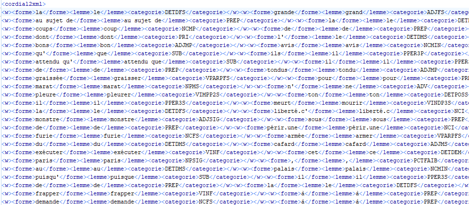

Voici ci-dessous une capture d'écran du fichier à transformer.

1. Définir une feuille de style dont le résultat est un document HTML et donnant à voir uniquement le texte. On essaiera de formater au mieux l’affichage (séparer les mots… saut de ligne après paragraphe…)
2. Définir une feuille de style dont le résultat est un document HTML et donnant à voir uniquement le texte en surlignant les mots dont le lemme est « aristocrate » ou « patriote » (stylage à définir par vous pour marquer le soulignement visé).
3. Définir une feuille de style dont le résultat est un document TXT contenant la liste des mots contenant la séquence « citoy », puis la séquence « patriot » ; compter aussi la fréquence de chacun des mots
4. Définir une feuille de style dont le résultat est un document TXT contenant la liste des catégories ; compter aussi la fréquence de chacune
5. Définir une feuille de style permettant d’afficher le texte en surlignant les mots de catégories NOM ou ADJ (stylage à définir par vous pour marquer le soulignement visé).
6. Définir une feuille de style dont le résultat est un document TXT contenant la liste des séquences NOM ADJ
7. Idem avec NOM PREP NOM